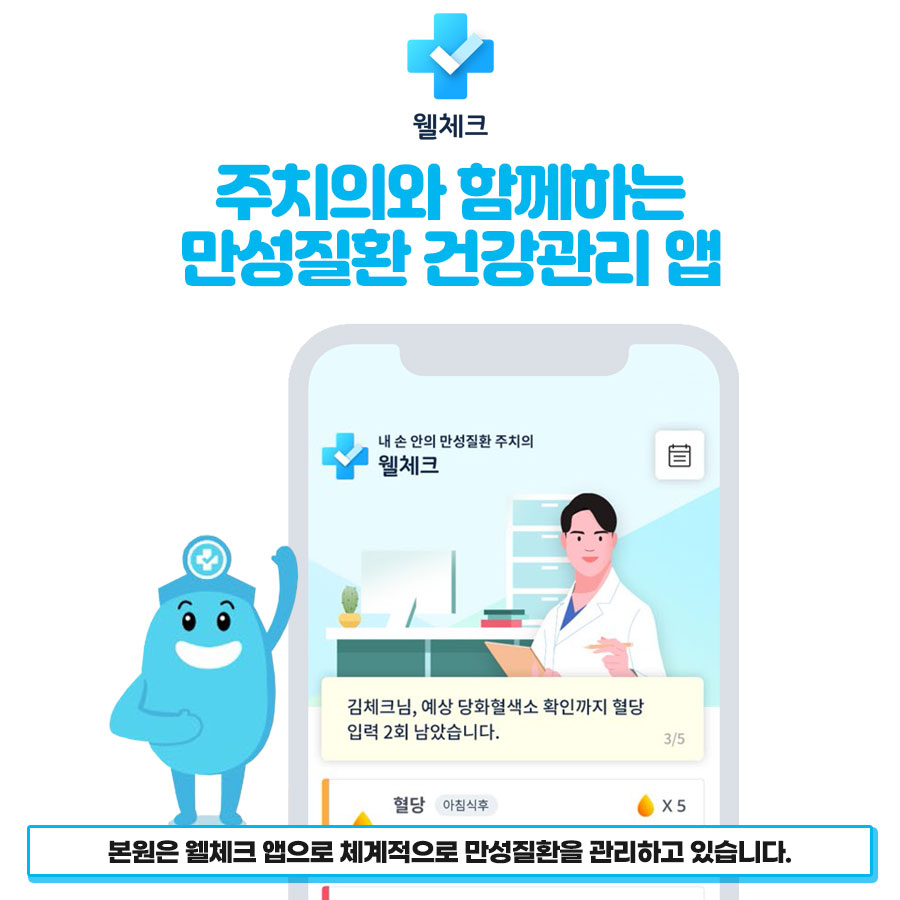
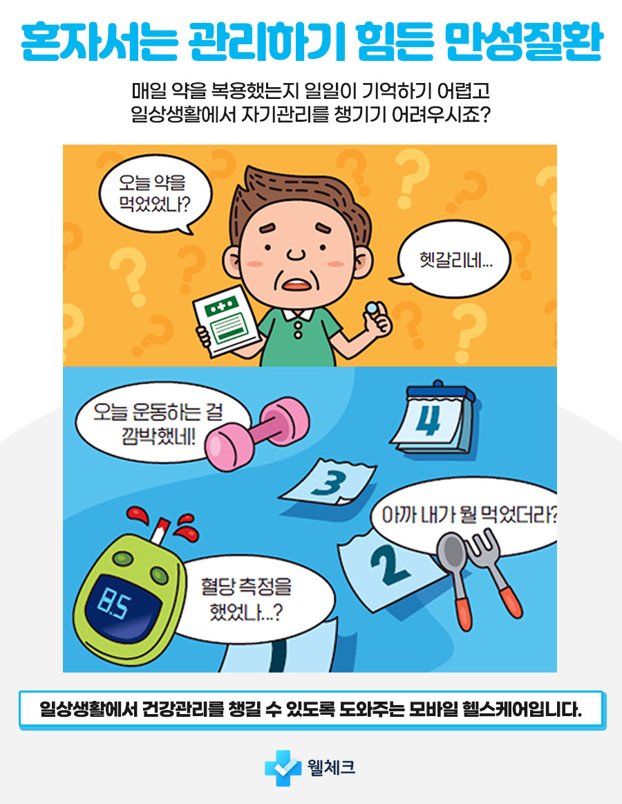
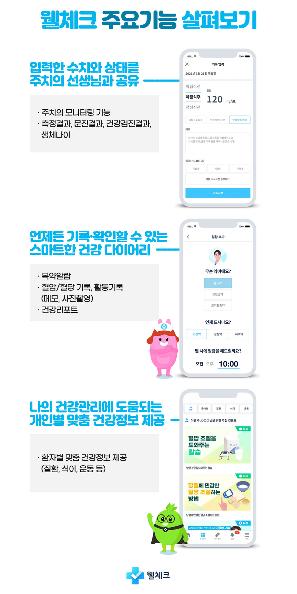
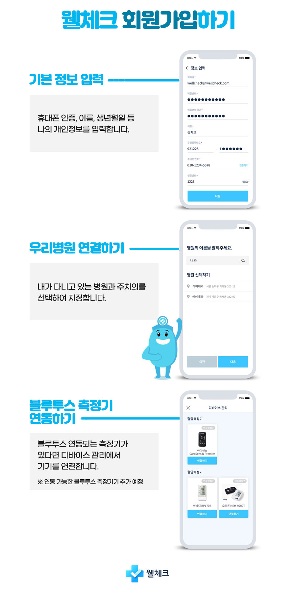

당뇨와 고혈압 같은 만성질환을 겪는 분들은 일상생활 속에서 철저한 관리가 필요합니다. 일상생활에서도 주치의와 함께 관리할 수 있는 건강관리앱 웰체크로 만성질환 관리를 시작해 보세요. 김태효탑내과의원은 웰체크 앱으로 체계적으로 만성질환을 관리하고 있습니다.


매일 약을 복용했는지 일일이 기억하기 어렵고, 일상생활에서 자기관리를 챙기기 어려우시죠? 오늘 약을 먹었는지, 혈당 측정을 했는지, 아까 뭘 먹었는지 — 만성질환 환자의 경우(질환에 따라) 약복용·식단관리·혈당 및 혈압 체크·운동관리가 의료기관의 치료만큼이나 중요하지만, 바쁘게 지내다 보면 매일 챙기기란 결코 쉬운 일이 아닙니다.
만성질환 관리가 필요한 분들에게 건강관리앱 웰체크를 추천드려요!
건강관리앱 웰체크는 다음과 같은 기능을 바탕으로 스마트한 만성질환 관리를 돕습니다.


건강관리앱 웰체크에 회원가입하셔서 만성질환 관리를 시작해 보세요.
주치의가 직접 케어해서 더 좋은, 모바일로 간편해서 더 좋은 건강관리앱 웰체크는 앱스토어 & 구글스토어에서 다운받으실 수 있습니다.
개인에 따라 부작용이 생길 수 있습니다. 시술 전 꼼꼼한 상담이 중요합니다.
이 페이지는 의료광고법을 준수하여 작성되었습니다.